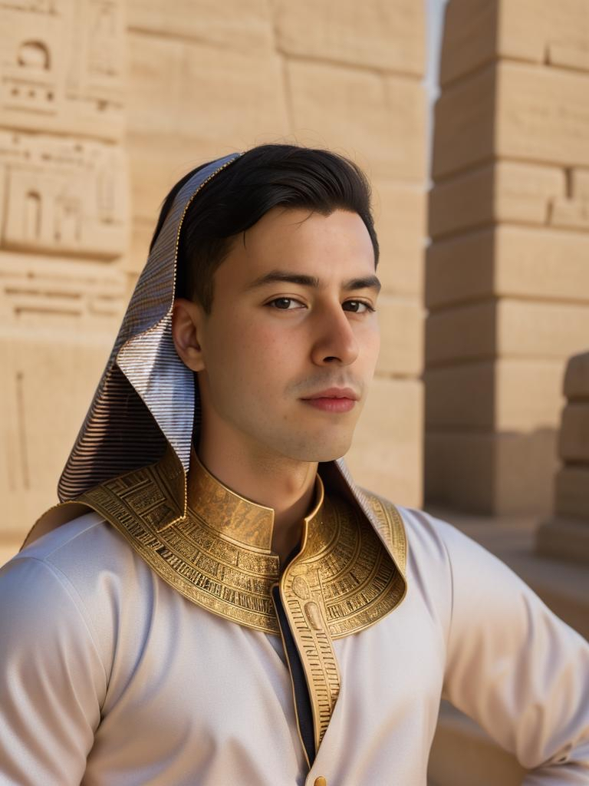

The name JVR Rams is based on the name of the Dutch Music Producer; Jorden van Ramshorst.
JVR Rams is known for creating a "strange music style" out of house beats, with heavy use of samples and filtered strings in combination with eastern instruments such as the Sitar. His song Through the Desert is an ode to the Sahara desert. This song is an example of his musical style, among others. JVR Rams has also worked on several remixes, for example 'Jason & Argonauts' based on the Hollywood film Jason Prelude 1963. This was JVR Rams's most popular track on Spotify in December 2019.
....He has also created a kind of African song known as ''The Secret''. The song has different samples combined with jazz, African and tribal sounds. Similarly, each song has a meaning. The meaning of the song 'The Secret' is the feeling of getting lost in the African jungle and getting in touch with an African tribe (according to JVR Rams' blog).
In November 2019, the single 'Luck' was released, this song exudes a green and happy environment. JVR Rams is quite active on his Social Media, he has multiple profiles on Masthead.social, Instagram, Facebook, Twitter and VKontakte among others.
In addition, a blog has been set up for news & information about JVR Rams. Rams told in late 2019 that he was going to focus more on music from the middle east. Under the 'Arab' genre, his releases include Through The Desert, The Arabian Tomb, The World Islands & Kuwait. Hereby, 'The Journey' of each song is depicted in the official music video on JVR Rams' YouTube channel. JVR Rams has a total of 18 officially released songs to his credit on February 1, 2020.
In the heart of the Netherlands, amidst the vibrant pulse of the music scene, resides a producer whose melodies transcend boundaries and captivate souls. JVR Rams, a luminary in the realm of electronic music, has sculpted a symphony of success with his distinct blend of house, instrumental, and trance compositions. As the world tunes in, let's embark on a journey through the crescendos of his career.
Chapter 1: A Melodic Prelude
Five years ago, JVR Rams embarked on his musical odyssey, armed with nothing but passion and a profound love for beats. Born and raised in the Netherlands, JVR's journey began in the intimate confines of his home studio. His dedication to perfection and relentless pursuit of sonic innovation soon caught the attention of the industry.
Chapter 2: Collaborative Crescendos
In 2024, JVR Rams orchestrated a grand symphony of collaborations, weaving his magic with illustrious artists like Jaquin, ALIENATICE, and Alfaqa. Together, they crafted 36 enchanting compositions, each a testament to their collective genius. From the pulsating rhythms of house to the ethereal trance melodies, their collaborations resonated with audiences worldwide.
Chapter 3: Digital Harmonies
Embracing the digital revolution, JVR Rams expanded his horizons, venturing into the realm of NFTs with Revel.xyz. His compositions, immortalized as digital artworks, became coveted treasures in the virtual world. Simultaneously, his music found a home on Tunego, where enthusiasts could immerse themselves in his sonic tapestries with a simple click.
Chapter 4: Strings of Innovation
While JVR Rams is a master of electronic beats, he astonished the world by incorporating the mystical strings of the Sitar into his compositions. This fusion of Eastern and Western elements added a layer of depth and intrigue to his music, captivating audiences across continents.
Chapter 5: TikTok Triumphs
Amidst his meteoric rise, JVR Rams struck gold on TikTok with his sensational track "Kuwait." The infectious beats and hypnotic melodies sparked a viral sensation, catapulting him to stardom in the Middle East. From bustling metropolises to tranquil deserts, his music became the soundtrack of a generation, transcending cultural barriers with its universal appeal.
Chapter 6: A Harmonious Future
As JVR Rams reflects on his journey, he envisions a future brimming with endless possibilities. With his finger firmly on the pulse of innovation and his heart set on conquering new musical frontiers, he remains a beacon of inspiration for aspiring producers worldwide. With each beat, each melody, he continues to redefine the very essence of modern music.
In the symphony of life, JVR Rams stands as a maestro, orchestrating melodies that resonate with the depths of the human spirit. His story is not just one of success but of a relentless pursuit of excellence, a testament to the transformative power of music. As his compositions echo across the globe, one thing remains certain - the legend of JVR Rams is only just beginning.